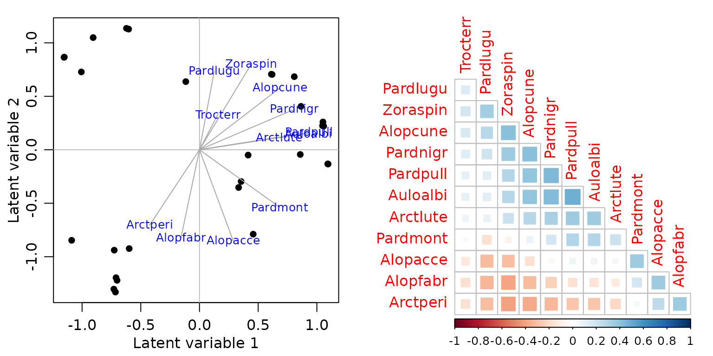
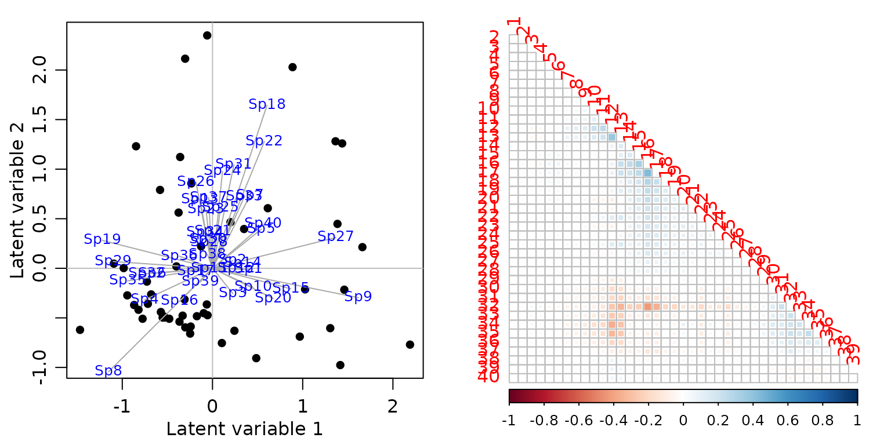
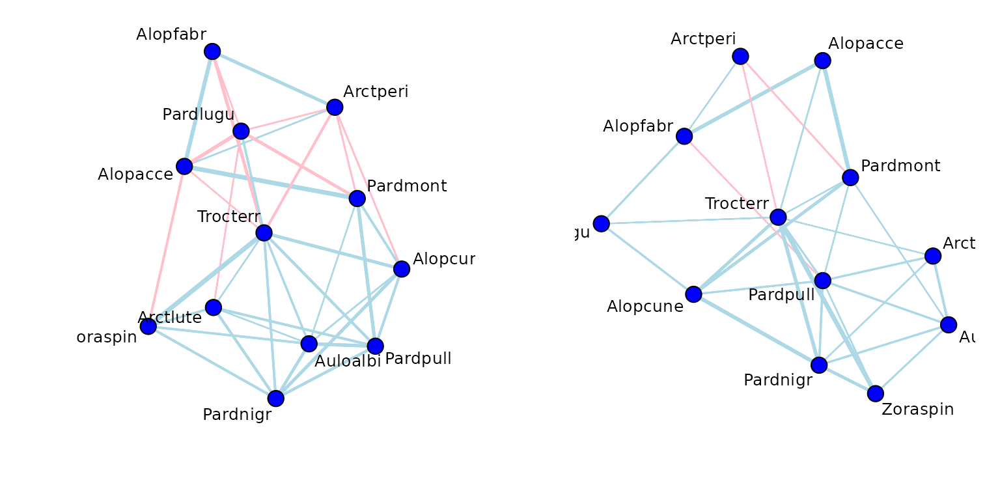

Chapter 17 -- Studying co-occurrence patterns -- Exercise solutions and Code Boxes
David Warton
2022-08-25
Chapter17Solutions.RmdExercise 17.1: Co-occurrence in hunting spider data
Petrus would like to think about co-occurrence of hunting spider species. He wants to know which species co-occur, and to what extent can these co-occurrence patterns be explained by joint response to environmental gradients.
What approach should he used to look at these questions?
He is clearly after methods for studying co-occurrence, so he wants to do covariance modelling on \(\Sigma\), e.g. using latent variables or graphical modelling.
Code Box 17.1: Estimating co-occurrence patterns using a copula model
library(mvabund)
data(spider)
library(ecoCopula)
par(mfrow=c(1,2), mgp=c(1.75,0.75,0), mar=c(3,3,1,1))
spiderAbund = mvabund(spider$abund)
spider_glmInt = manyglm(spiderAbund~1,data=spider$x)
ord_spiderInt = cord(spider_glmInt)
plot(ord_spiderInt, biplot=TRUE) #for a biplot
# now plot a correlation matrix
library(gclus)
#> Loading required package: cluster
sortVars=order.single(ord_spiderInt$sigma)
library(corrplot)
#> corrplot 0.92 loaded
corrplot(ord_spiderInt$sigma[sortVars, sortVars], type="lower", diag=FALSE, method="square")Code Box 17.2: Co-occurrence patterns explained by environmental variables
Exercise 17.2: Spider presence-absence
Repeat the analyses of Code Box 17.1 on presence-absence data, which you can construct using spiderPA=pmin(spiderAbund,1). Estimate the correlation matrix.
par(mfrow=c(1,2), mgp=c(1.75,0.75,0), mar=c(3,3,1,1))
spiderPA=pmin(spiderAbund,1)
spiderPA_glmInt = manyglm(spiderPA~1,data=spider$x, family="cloglog")
ord_spiderPAInt=cord(spiderPA_glmInt)
plot(ord_spiderPAInt, biplot=TRUE) #for a biplot
# now plot a correlation matrix
sortVars=order.single(ord_spiderPAInt$sigma)
corrplot(ord_spiderPAInt$sigma[sortVars, sortVars], type="lower",
diag=FALSE, method="square")
How does the correlation matrix compare to Figure 17.2b?
Correlations tend to be smaller, they range from about -0.4 up to 0.4.
Calculate the sum of squared loadings, with and without predictors, as in Code Box 17.2. Are the values smaller for the presence/absence data?
par(mfrow=c(1,2), mgp=c(1.75,0.75,0), mar=c(3,3,1,1))
spiderPA_glmX = manyglm(spiderPA~.,data=spider$x, family="cloglog")
ord_spiderPAX = cord(spiderPA_glmX)
plot(ord_spiderPAX, biplot=TRUE)
corrplot(ord_spiderPAX$sigma[sortVars,sortVars], type="lower", diag=FALSE, method="square")
ss = c(sum(ord_spiderPAInt$loadings^2), sum(ord_spiderPAX$loadings^2))
c(ss, 1-ss[2]/ss[1])
#> [1] 4.5312318 0.6609464 0.8541354
absCor = c( sum(abs(ord_spiderPAInt$sigma)),
sum( abs(ord_spiderPAX$sigma)) ) - ncol(spiderPA)
c(absCor, 1-absCor[2]/absCor[1])
#> [1] 31.9204555 1.6798318 0.9473744Is this what you expected?
The fact that correlations became weaker is expected. But interestingly, predictors were able to explain most of the correlation, with responses being close to uncorrelated after environmental variables were included.
Are your conclusions any different to Code Box 17.2, in terms of the extent to which patterns in co-occurrence can be explained by environmental variables?
I guess you would conclude here that most (more than two thirds) of co-occurrence in presence-absence can be explained by environmental variables, whereas this number was about half when looking at abundance.
Exercise 17.3: Co-occurrence in bird communities
Françoise visited 51 sites near Lyon, France, and estimated abundance of 40 different species of birds (by listening to bird songs for 15 minutes) (Tatibouët, 1981). He would like to understand bird co-occurrence, and the extent to which it is explained by predictors related to urbanisation. Load the data and fit ordinal regressions to each response:
library(ade4)
data(aviurba)
abund=mvabund(aviurba$fau)
library(ordinal)
ft_birdsInt=manyany(abund~1, "clm", family="ordinal", data=aviurba$mil)Use cord to fit a latent variable model and estimate the correlation matrix.
par(mfrow=c(1,2),mgp=c(1.75,0.75,0),mar=c(3,3,1,1))
ord_birdsInt=cord(ft_birdsInt)
plot(ord_birdsInt, biplot=TRUE)
sortBirdVars=order.single(ord_birdsInt$sigma)
corrplot(ord_birdsInt$sigma[sortBirdVars, sortBirdVars], type="lower", diag=FALSE, method="square")
Looks like nothing much is happening here!
Add fields to the model, to study the extent to which presence or absence of fields explains co-occurrence patterns. Calculate the sum of squared loadings, for latent variable models with and without fields as a predictor.
par(mfrow=c(1,2), mgp=c(1.75,0.75,0), mar=c(3,3,1,1))
ft_birdsX=manyany(abund~fields, "clm", family="ordinal", data=aviurba$mil)
ord_birdsX=cord(ft_birdsX)
plot(ord_birdsX,biplot=TRUE)
corrplot(ord_birdsX$sigma[sortBirdVars,sortBirdVars],type="lower",diag=FALSE, method="square")
ss = c(sum(ord_birdsInt$loadings^2), sum(ord_birdsX$loadings^2))
c(ss, 1-ss[2]/ss[1])
#> [1] 4.8849203 4.2228725 0.1355289
absCor = c( sum(abs(ord_birdsInt$sigma)), sum( abs(ord_birdsX$sigma)) ) - ncol(abund)
c(absCor, 1-absCor[2]/absCor[1])
#> [1] 87.6556088 73.0835750 0.1662419What can you conclude about co-occurrence patterns of these birds, and the extent to which they are explained by presence or absence of fields?
The proportion of co-occurrence patterns that can be explained is relatively small, so I guess we can say that fields is not a major driver of co-occurrence patterns of birds.
The ordinal package has a bug in it (in version 2019.12) so it conflicts with lme4 (specifically it overwrites the ranef function), [issue posted on Github] (https://github.com/runehaubo/ordinal/issues/48). So if you are running analyses using both packages, you need to detach the ordinal package before continuing…
detach("package:ordinal", unload=TRUE)
#> Warning: 'ordinal' namespace cannot be unloaded:
#> namespace 'ordinal' is imported by 'ecoCopula' so cannot be unloadedCode Box 17.3: A copula graphical model for Petrus’s spider data
par(mfrow=c(1,2),mgp=c(1.75,0.75,0),mar=c(3,3,1,1))
graph_spiderInt = cgr(spider_glmInt)
plot(graph_spiderInt, vary.edge.lwd=TRUE)
graph_spiderX = cgr(spider_glmX, graph_spiderInt$all_graphs$lambda.opt)
#> Warning in cgr(spider_glmX, graph_spiderInt$all_graphs$lambda.opt): 'best' model
#> selected among supplied lambda only
plot(graph_spiderX, vary.edge.lwd=TRUE)
Exercise 17.4: Does soil dryness explain co-occurrence patterns in Petrus’s data?
Recall that in Figure 16.1a, Alopecosa accentuata, Alopecosa fabrilis and Arctosa perita decreased in response to soil dryness, while all other species increased. Note that the “unconstrained” correlation matrix of Figure 17.2b found negative correlation patterns between these species and most others. To what extent do contrasting responses to soil dryness explain the negative correlations of Figure 17.2b? Answer this question by fitting a covariance model of your choice to the spider data with and without soil dryness as a predictor.
par(mfrow=c(1,2),mgp=c(1.75,0.75,0),mar=c(3,3,1,1))
spider_glmSoil = manyglm(spiderAbund~soil.dry,data=spider$x)
ord_spiderSoil=cord(spider_glmSoil)
corrplot(ord_spiderInt$sigma[sortVars,sortVars],type="lower",diag=FALSE, method="square")
corrplot(ord_spiderSoil$sigma[sortVars,sortVars],type="lower",diag=FALSE, method="square")
ss = c(sum(ord_spiderInt$loadings^2), sum(ord_spiderSoil$loadings^2))
c(ss, 1-ss[2]/ss[1])
#> [1] 7.4777865 5.9162267 0.2088265
absCor = c( sum(abs(ord_spiderInt$sigma)),
sum( abs(ord_spiderSoil$sigma)) ) - ncol(spider$abund)
c(absCor, 1-absCor[2]/absCor[1])
#> [1] 52.512057 40.215152 0.234173This explained less covariation than the model with all six environmental variables, more like a fifth of it rather than half. But anyway, the negative correlations we saw previously (above, left) do involve Arctperi, Alopacce and Alopfabr, the three species that have a negative association with soil.dry. These three species are all positively correlated with each other but negatively correlated with most other species.
After including soil.dry in the model (above, right), most of the negative associations have disappeared, and these species become largely uncorrelated with all others. So while plenty of the covariation does not seem to be explained by soil.dry, it is doing a good job of capturing the negative co-occurrence patterns in spider abundance.